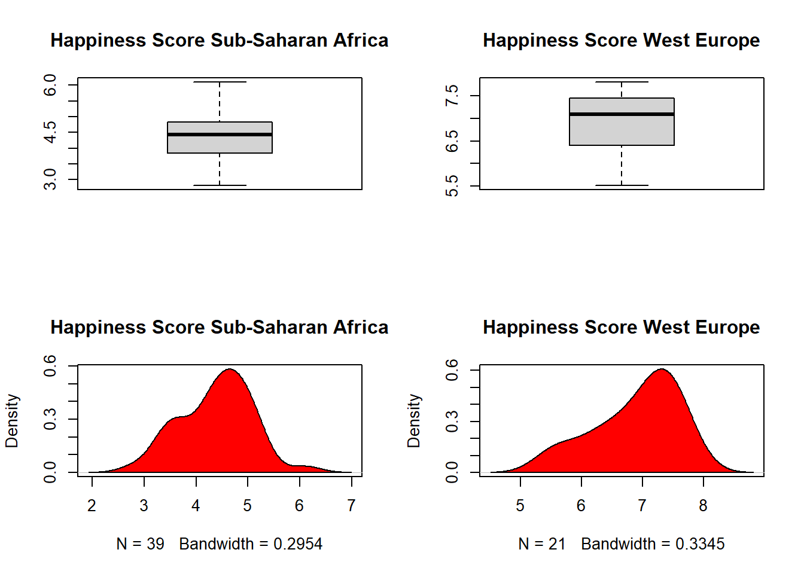
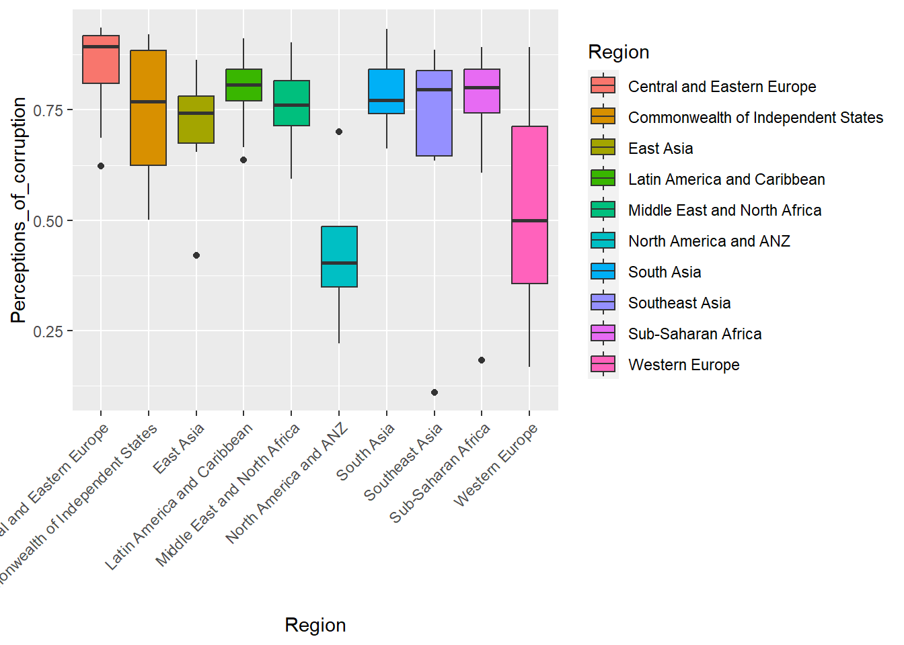
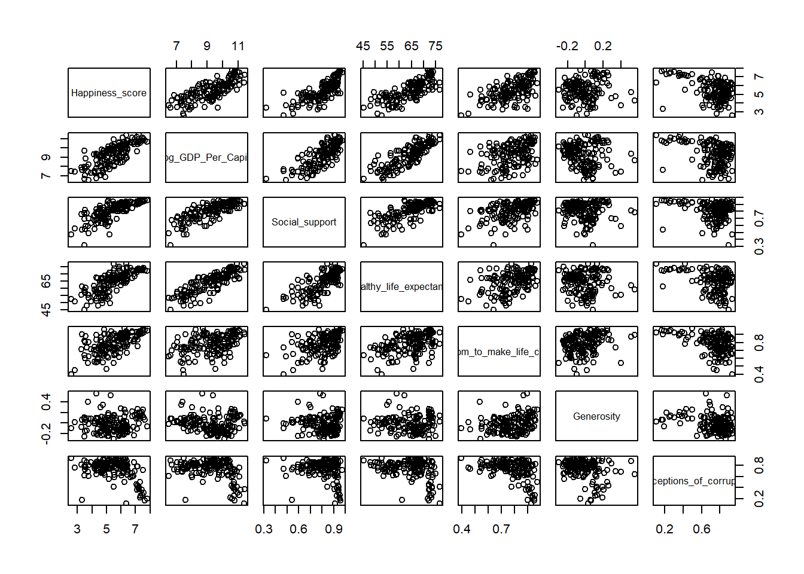
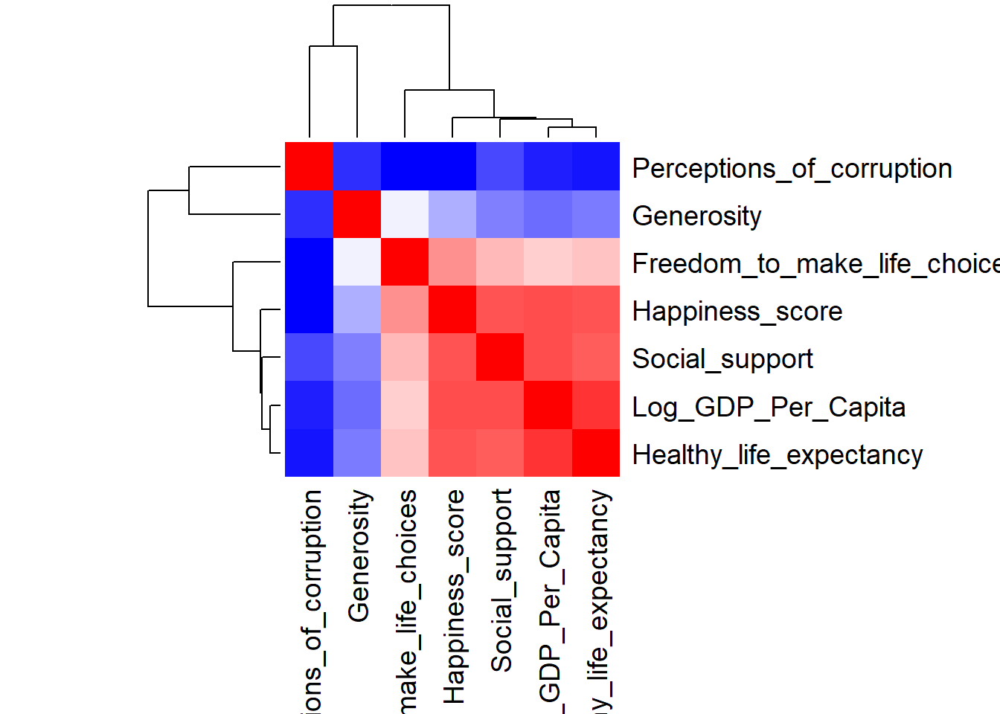
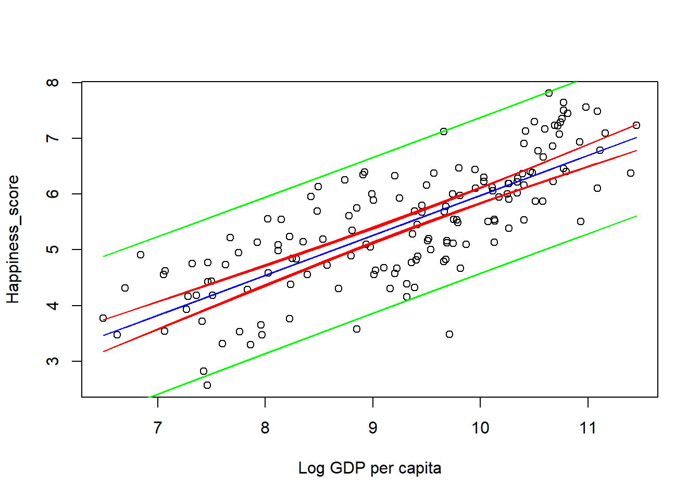
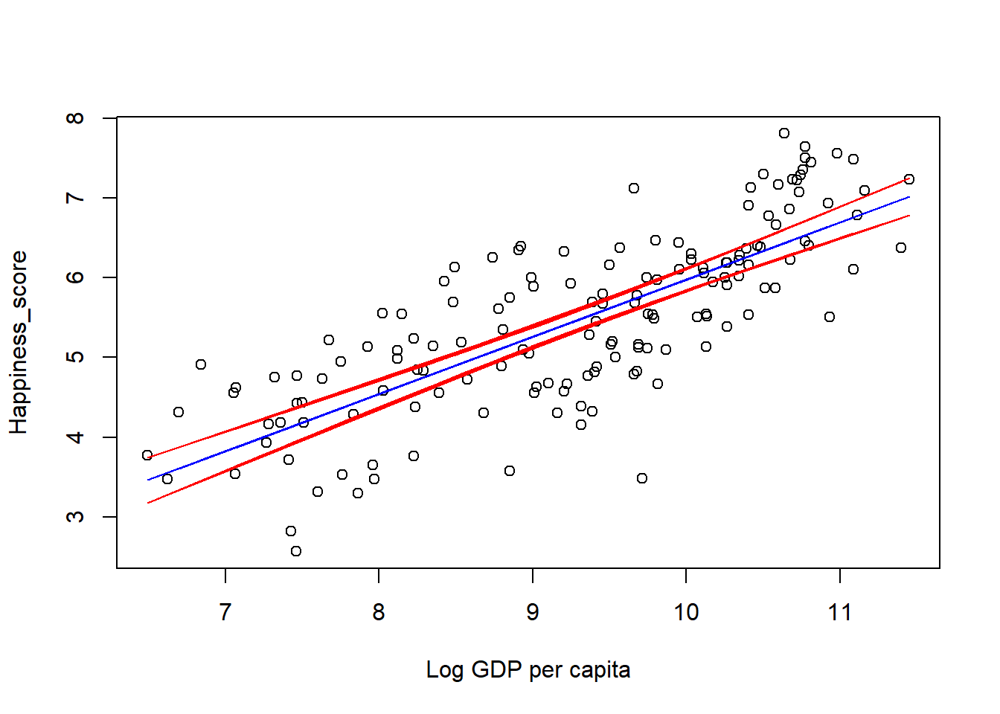

Code
df = read.csv("data/world_happiness_data.csv")
library(DT)Note that you can collapse the code cells by clicking on the code-folding icon in the top right of the code cell.
The World Happiness Report is an annual study released by the United Nations that investigates individual happiness levels as well as other metrics of well-being. The study provides a happiness score as well as the values of various other indicators for each of the 153 nations.
This is intended to be an exhaustive analysis of the data and the model which will be useful to students and individuals wishing to learn EDA in R or to revise SLR and related concepts. We will begin with an exploratory data analysis to understand the data and the relationship between the variables. We will then fit a simple linear regression model to the data and interpret the results.
We can inspect the data in the interactive table below. This will allow us to get a sense of the data and the variables we are working with.
df = read.csv("data/world_happiness_data.csv")
library(DT)datatable(df, options = list(pageLength = 5))Check unique regions:
unique(df$Region) [1] "Western Europe" "North America and ANZ"
[3] "Middle East and North Africa" "Latin America and Caribbean"
[5] "Central and Eastern Europe" "East Asia"
[7] "Southeast Asia" "Commonwealth of Independent States"
[9] "Sub-Saharan Africa" "South Asia" Put “Sub-Saharan Africa” and “Western Europe” into their own dataframes for tidy boxplots:
ssa_df = df[(df$Region=='Sub-Saharan Africa'),]
we_df = df[(df$Region=='Western Europe'),]Make boxplots and density plots:
par(mfrow=c(2, 2))
boxplot(ssa_df$Happiness_score, main='Happiness Score Sub-Saharan Africa')
boxplot(we_df$Happiness_score, main='Happiness Score West Europe')
plot(density(ssa_df$Happiness_score), main='Happiness Score Sub-Saharan Africa')
polygon(density(ssa_df$Happiness_score), col='red')
plot(density(we_df$Happiness_score), main='Happiness Score West Europe')
polygon(density(we_df$Happiness_score), col='red')
Further information on the happiness scores for sub-Saharan Africa and Western Europe respectively:
summary(ssa_df$Happiness_score) Min. 1st Qu. Median Mean 3rd Qu. Max.
2.817 3.851 4.432 4.383 4.822 6.101 summary(we_df$Happiness_score) Min. 1st Qu. Median Mean 3rd Qu. Max.
5.515 6.401 7.094 6.899 7.449 7.809 From the boxplots, density plots and the summary statistics, we observe a notable difference in the happiness scores of people from Sub-Saharan Africa and Western Europe. Some additional noteworthy observations are that:
The median happiness score for Western Europe is 7.094 compared to 4.432 for Sub-Saharan Africa.
The minimum happiness score for Western Europe is 5.515 compared to 2.817 for Sub-Saharan Africa.
The maximum happiness score for Western Europe is 7.809 compared to 6.601 for Sub-Saharan Africa.
The 25th-percentile happiness score of 6.401 for WE is greater than the maximum score for SSA.
For both Western Europe and Sub-Saharan Africa the mean values are less than the median - this is something we expected from observing the density plots and noticing that they are both left-skewed. From visual inspection of the density plot, the Western Europe distribution is more left skewed and this is reflected in the greater difference between it’s mean and median compared to Sub-Saharan Africa.
There are 39 observations for SSA compared to 21 for WE.
Looking at the boxplots, we similarly observe that the distribution for WE is higher overall and more left-skewed than SSA as the lower ‘whisker’ is longer than the upper. There are no outliers.
We can augment out summary statistics by quantifying the variance in the scores using:
var(ssa_df$Happiness_score)[1] 0.4665587var(we_df$Happiness_score)[1] 0.466778And getting the IQR using:
IQR(ssa_df$Happiness_score)[1] 0.9708499IQR(we_df$Happiness_score)[1] 1.048These measures of variance are fairly similar for SSA and WE.
The boxplots show that the perceptions of corruption per region are surprisingly similar. We can distinguish two sets of countries based on this analysis:
Those with a relatively lower score: “North America and ANZ” and “Western Europe.”
Those with a relatively high score: the remaining regions.
Answers to other questions:
# use ggplot2 to rotate labels...
library(ggplot2)
ggplot(df, aes(x = Region,
y = Perceptions_of_corruption,
fill = Region)) +
geom_boxplot() +
theme(axis.text.x = element_text(angle = 45, hjust = 1))
Happiness score and Log_GDP_Per_Capita:
Happiness score and Social_support:
Happiness score and Healthy_life_expectancy:
Happiness score and Freedom_to_make_life_choices:
Happiness score and Generosity:
Happiness score and Perceptions_of_corruption:
# get numeric columns
nums = unlist(lapply(df, is.numeric), use.names = FALSE)
pairs_df = df[, nums]
pairs(pairs_df)
cor(pairs_df) Happiness_score Log_GDP_Per_Capita Social_support
Happiness_score 1.00000000 0.7753744 0.76500076
Log_GDP_Per_Capita 0.77537440 1.0000000 0.78181358
Social_support 0.76500076 0.7818136 1.00000000
Healthy_life_expectancy 0.77031629 0.8484686 0.74274409
Freedom_to_make_life_choices 0.59059678 0.4190186 0.47886318
Generosity 0.06904313 -0.1183994 -0.05678035
Perceptions_of_corruption -0.41830509 -0.3347291 -0.21052960
Healthy_life_expectancy
Happiness_score 0.77031629
Log_GDP_Per_Capita 0.84846862
Social_support 0.74274409
Healthy_life_expectancy 1.00000000
Freedom_to_make_life_choices 0.44884619
Generosity -0.07185211
Perceptions_of_corruption -0.35384121
Freedom_to_make_life_choices Generosity
Happiness_score 0.5905968 0.06904313
Log_GDP_Per_Capita 0.4190186 -0.11839937
Social_support 0.4788632 -0.05678035
Healthy_life_expectancy 0.4488462 -0.07185211
Freedom_to_make_life_choices 1.0000000 0.25372112
Generosity 0.2537211 1.00000000
Perceptions_of_corruption -0.4201445 -0.27848023
Perceptions_of_corruption
Happiness_score -0.4183051
Log_GDP_Per_Capita -0.3347291
Social_support -0.2105296
Healthy_life_expectancy -0.3538412
Freedom_to_make_life_choices -0.4201445
Generosity -0.2784802
Perceptions_of_corruption 1.0000000Note that we can also use the corrplot package to visualise the correlation matrix for a neater output:
cor_matrix <- cor(pairs_df)
# visualise the correlation matrix
heatmap(cor_matrix, col = colorRampPalette(c("blue", "white", "red"))(100),
symm = TRUE, margins = c(10, 10))
Based on the results so far, I would expect the Log_GDP_Per_Capita to be a better predictor variable in a regression model than Freedom_to_make_life_choices. The reason I select this is because:
The mathematical statement of the simple linear regression model is given by \[ Y_i = \beta_0 + \beta_1X_i + \epsilon_i,\quad i =1, ..., n, \]
where \(\beta_0\), \(\beta_1\) are parameters for the intercept and slope of the model respectively - these are fixed, unknown constants which we estimate with the statistics \(\hat{\beta_0}\) and \(\hat{\beta_1}\). The remaining values \(Y_i, X_i\) and \(\epsilon_i\) are the values of the dependent/response variable, the independent/predictor variable, and the error for observation \(i.\)
The predictions of our model will be given by \[ \hat{Y_i} = \hat{\beta_0} + \hat{\beta_1}X_i,\quad i =1, ..., n, \] where:
\(\hat{Y_i}\) is the predicted Happiness_score for observation \(i\).
\(\hat{\beta_0}\) is the estimated intercept term - it is the model’s predicted happiness score when \(X=0\) (i.e., the value of the dependent variable when the independent variable is 0).
\(\hat{\beta_1}\) is the slope of the regression line - in our model it is the predicted increase in the happiness score for a one unit increase in Log_GDP_Per_Capita.
fit = lm(Happiness_score ~ Log_GDP_Per_Capita, data=df)
summary(fit)
Call:
lm(formula = Happiness_score ~ Log_GDP_Per_Capita, data = df)
Residuals:
Min 1Q Median 3Q Max
-2.29256 -0.52524 0.02843 0.57109 1.38802
Coefficients:
Estimate Std. Error t value Pr(>|t|)
(Intercept) -1.19865 0.44586 -2.688 0.00799 **
Log_GDP_Per_Capita 0.71774 0.04757 15.088 < 2e-16 ***
---
Signif. codes: 0 '***' 0.001 '**' 0.01 '*' 0.05 '.' 0.1 ' ' 1
Residual standard error: 0.7047 on 151 degrees of freedom
Multiple R-squared: 0.6012, Adjusted R-squared: 0.5986
F-statistic: 227.6 on 1 and 151 DF, p-value: < 2.2e-16We can use these values to express our predicted values for the happiness score as: \(\hat{\text{Happiness_score} } = -1.19865 + 0.71774(\text{Log_GDP_Per_Capita_i})\)
We can interpret the estimates of the intercept and slope term as follows:
When Log_GDP_Per_Capita is 0, the predicted happiness score is -1.19865. Considering that this is negative, it’s important to note the context that a Log_GDP_Per_Capita of 0 is not practically meaningful in a real-world scenario.
For a unit increase in the the Log_GDP_Per_Capita, the predicted happiness score increases by 0.71774.
The confidence intervals tell us:
We are 95% confident that the true value of \(\beta_0\) is between -2.0795752 and -0.3177169.
We are 95% confident that the true value of \(\beta_1\) is between 0.6237481 and 0.8117289.
confint(fit) 2.5 % 97.5 %
(Intercept) -2.0795752 -0.3177169
Log_GDP_Per_Capita 0.6237481 0.8117289We want to test \(H_O: \beta_0 = 0\) vs \(H_A: \beta_0 \neq 0\)
To do this we need to do a t-test.
We find that the \(T=-2.69\) - the same value we observed in the output of the summary function above.
# calculate the T statistic
N = length(df$Happiness_score)
MSE = sum(fit$residuals^2/(N-2))
SXX = sum((df$Log_GDP_Per_Capita - mean(df$Log_GDP_Per_Capita))^2)
VARB0 = MSE * (1/N + (mean(df$Log_GDP_Per_Capita)^(2)/SXX))
T = (fit$coefficients[1] - 0) / sqrt(VARB0)
print(T)(Intercept)
-2.688393 We can compare \({|T|}\) with the \(t_{1-\alpha/2, n-2}\) quantile of the t-distribution which we calculate below. As \(|-2.69| > 1.975799\) we reject the \(H_0.\)
At the \(\alpha=0.05\) significance level, the evidence is not strong enough to indicate that \(\beta_0 = 0.\)
This indicates that when the Log_GDP_Per_Capita is at 0, the happiness score is non-zero. In other words, the true coefficient for the intercept \(\beta_0\) is non-zero.
Note also that the quantile from the t-distribution is close to 1.96 - this is due to the high number of observations which causes the t-distribution to approach the normal distribution.
qt(1-0.025, N-2)[1] 1.975799qnorm(1-0.025)[1] 1.959964Finally, we calculate the p-value. As the p-value is less than 0.05, we reject the null hypothesis and make the same conclusion as with the t-statistic method.
Note that this also agrees with the p-value output of the summary function.
2*(1 - pt(abs(T), df=N-2))(Intercept)
0.007986185 We want to test \(H_O: \beta_1 = 0\) vs \(H_A: \beta_1 \neq 0\)
To do this we need to do a t-test.
We find that the \(T=15.08778\) - the same value we observed in the output of the summary function above.
# calculate the T statistic
N = length(df$Happiness_score)
MSE = sum(fit$residuals^2/(N-2))
SXX = sum((df$Log_GDP_Per_Capita - mean(df$Log_GDP_Per_Capita))^2)
VARB1 = MSE / SXX
T = (fit$coefficients[2] - 0) / sqrt(VARB1)
print(T)Log_GDP_Per_Capita
15.08778 Comparing \({|T|}\) with the \(t_{1-\alpha/2, n-2}\) quantile of the t-distribution which we calculate below. As \(|15.08778| > 1.975799\) we reject the \(H_0.\)
At the \(\alpha=0.05\) significance level, the evidence is not strong enough to indicate that \(\beta_1 = 0.\)
This indicates that the true coefficient (the slope term in the model) for Log_GDP_Per_Capita is not equal to 0.
qt(1-0.025, N-2)[1] 1.975799Finally, we calculate the p-value. As the p-value is less than 0.05, we reject the null hypothesis and make the same conclusion as with the t-statistic method. Note that the p-value prints out as 0 due to the extremely small value - in the R summary function this is < 2e-16.
p_val = 2*(1 - pt(abs(T), df=N-2))
print(p_val)Log_GDP_Per_Capita
0 If we want to test the hypothesis that \(H_0: \beta_1=0\), \(H_A: \beta_1\neq 0\) we can use the F-test.
The F-statistic in the summary is found using \(F = \frac{MSR}{MSE}\) and, in the context of the simple linear regression model, is distributed with \(1, n-2\) degrees of freedom.
Based on the p-value below we reject the null hypothesis that \(\beta_1=0\). Note that this agrees with the conclusions of the t-test for \(\beta_1\) above.
summary(fit)
Call:
lm(formula = Happiness_score ~ Log_GDP_Per_Capita, data = df)
Residuals:
Min 1Q Median 3Q Max
-2.29256 -0.52524 0.02843 0.57109 1.38802
Coefficients:
Estimate Std. Error t value Pr(>|t|)
(Intercept) -1.19865 0.44586 -2.688 0.00799 **
Log_GDP_Per_Capita 0.71774 0.04757 15.088 < 2e-16 ***
---
Signif. codes: 0 '***' 0.001 '**' 0.01 '*' 0.05 '.' 0.1 ' ' 1
Residual standard error: 0.7047 on 151 degrees of freedom
Multiple R-squared: 0.6012, Adjusted R-squared: 0.5986
F-statistic: 227.6 on 1 and 151 DF, p-value: < 2.2e-16We can reproduce the F value ourselves using:
# difference between what we expected and what happened...
MSR = sum((fitted(fit) - mean(df$Happiness_score))^2) / 1
# typical error...
MSE = sum(fit$residuals^2 / (N-2))
F = MSR / MSE
print(F)[1] 227.6411We can also obtain the p-value using:
alpha = 0.05
# one tail so we don't need alpha / 2
FDIST = qf(1-alpha, 1, N-2)
print(FDIST)[1] 3.903781PVALUE = pf(1-F, 1, N-2)
print(PVALUE)[1] 0The R-squared value is given by \(0.6012\) for this model.
The coefficient of determination \(R^2\) represents the proportion of variance in the dependent variable (Happiness_score in this case) that is predictable from the independent variable (Log GDP per capita).
In the context of a linear regression model, \(R^2\) is a measure of how well the model fits the data.
We find that approximately 60.12% of the observed variation in the Happiness_score can be explained by the Log GDP per capita. This indicates that the fit is not great but it still has some explanatory power.
SST = sum((df$Happiness_score - mean(df$Happiness_score))^2)
SSE = sum(fit$residuals^2)
R2 = (SST - SSE) / SST
print(R2)[1] 0.6012055RSE is a measure of the quality of a linear regression fit.
Due to the presence of error in the model (as stated in model specification), we are not capable of perfectly predicting our response variable (Happiness_score) from the predictor variable (Log GDP per capita).
We can say that the Log GDP per capita accurately predicts the Happiness_score with an error of 0.7047 on average.
Note also that RMSE and RSE are identical in the context of the SLR model.
N = length(df$Happiness_score)
RMSE = sqrt(SSE/(N-2))
print(RMSE)[1] 0.7047226The 95% prediction interval for the estimated values of Y corresponding to the X values is given by: \(\hat{Y}^* \pm t_{\alpha / 2, n-2} \sqrt{\operatorname{MSE}\left(1+\frac{1}{n}+\frac{\left(X^*-\bar{X}\right)^2}{S_{X X}}\right)}\)
We note from the plot below that the prediction intervals in green are much wider than the confidence intervals in red. They almost cover the entire range of observed data points. We are 95% sure that new observations will lie within the prediction intervals.
N = length(df$Log_GDP_Per_Capita)
SXX = sum((df$Log_GDP_Per_Capita - mean (df$Log_GDP_Per_Capita))^2 )
MSE = SSE / (N-2)
# note difference in formula compared to VAR_Y above
VAR_E = MSE*(1 + 1/N + (df$Log_GDP_Per_Capita - mean(df$Log_GDP_Per_Capita))^2 / SXX)
Yhat = fitted(fit)
# cbind(Yhat - qt(1-alpha/2, N-2)*sqrt(VAR_E),Yhat + qt(1-alpha/2, N-2)*sqrt(VAR_E) )
plot(df$Log_GDP_Per_Capita, df$Happiness_score, xlab="Log GDP per capita", ylab="Happiness_score")
lines(df$Log_GDP_Per_Capita, Yhat, col="blue")
# confidence intervals
lines(df$Log_GDP_Per_Capita, Yhat + qt(1-alpha/2, N-2)*sqrt(VAR_Y), col="red")
lines(df$Log_GDP_Per_Capita, Yhat - qt(1-alpha/2, N-2)*sqrt(VAR_Y), col="red")
# prediction intervals
lines(df$Log_GDP_Per_Capita, Yhat + qt(1-alpha/2, N-2)*sqrt(VAR_E), col="green")
lines(df$Log_GDP_Per_Capita, Yhat - qt(1-alpha/2, N-2)*sqrt(VAR_E), col="green")
Comments on the shape of the 95% confidence intervals for the estimated values of Y
The 95% CI for the estimated values of Y corresponding to the X values is given by: \[\hat{Y}^* \pm t_{\alpha / 2, n-2} \sqrt{\operatorname{MSE}\left(\frac{1}{n}+\frac{\left(X^*-\bar{X}\right)^2}{S_{X X}}\right)}\]
In our plot below, we can observe that the confidence interval is more narrow in the middle and wider towards the lower and upper values of Log GDP per capita.
Due to the high number of observations in the dataset the CI is quite narrow overall. If we had less observations, there would likely be more variability and uncertainty in our estimates, leading to a wider confidence interval.
Code
